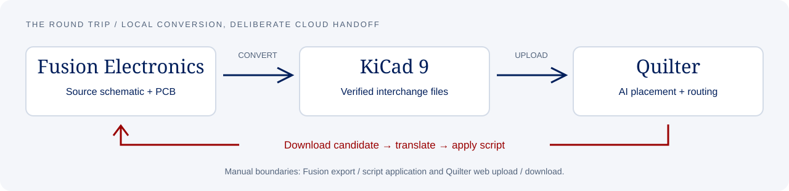

Your design should survive
the journey between tools.
Move from Fusion Electronics to Quilter through KiCad, then translate placement and copper back. Preserve the source, expose format limits and verify what crosses the boundary.
Keep the source.
Your schematic, net membership and embedded libraries remain authoritative. The return script targets the existing PCB.
Use the real engine.
Official KiCad APIs and CLI tools, with Python orchestration. No GUI driving, cloud conversion or account automation.
Make it testable.
Independent importer checks and an original synthetic fixture. Reproduce the round trip without sharing a research design.

A small board.
A meaningful stress test.
12 parts. 24 pads. Four nets. An original 80 × 60 mm fixture exercises placement, flips, copper arcs, vias, restriction wires and pour replacement.
Install KiCad 9 and 10 on Windows, then run the example from the repository root.
Read exactly what was verified →.\Fusion_to_Quilter.cmd `
--input examples\roundtrip-demo
.\Selftest_Roundtrip.cmd `
--name roundtrip-demo
# Unchanged return
# Simulated placement and routing
# Routed second-pass edits